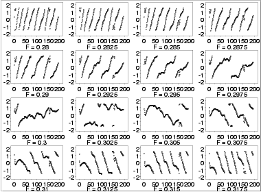
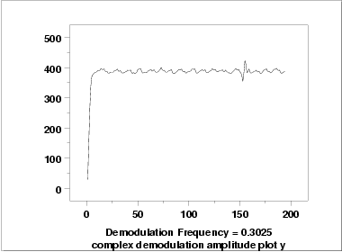

|
1.
Exploratory Data Analysis
1.4. EDA Case Studies 1.4.2. Case Studies 1.4.2.5. Beam Deflections
|
|||
| Sinusoidal Model |
The lag plot and autocorrelation plot in the previous section
strongly suggested a sinusoidal model might be appropriate.
The basic sinusoidal model is:
To obtain a good fit, sinusoidal models require good starting values for C, the amplitude, and the frequency. |
||
| Good Starting Value for C |
A good starting value for C can be obtained by
calculating the mean of the data. If the data show a trend, i.e., the
assumption of constant location is violated, we can replace
C with a linear
or quadratic least squares fit. That is, the model becomes
|
||
| Good Starting Value for Frequency | The starting value for the frequency can be obtained from the spectral plot, which shows the dominant frequency is about 0.3. | ||
| Complex Demodulation Phase Plot |
The
complex demodulation phase plot
can be used to refine this initial estimate for the frequency.
For the complex demodulation plot, if the lines slope from left to right, the frequency should be increased. If the lines slope from right to left, it should be decreased. A relatively flat (i.e., horizontal) slope indicates a good frequency. We could generate the demodulation phase plot for 0.3 and then use trial and error to obtain a better estimate for the frequency. To simplify this, we generate 16 of these plots on a single page starting with a frequency of 0.28, increasing in increments of 0.0025, and stopping at 0.3175. 
|
||
| Interpretation | The plots start with lines sloping from left to right but gradually change to a right to left slope. The relatively flat slope occurs for frequency 0.3025 (third row, second column). The complex demodulation phase plot restricts the range from \(\pi\)/2 to -\(\pi\)/2. This is why the plot appears to show some breaks. | ||
| Good Starting Values for Amplitude |
The
complex demodulation amplitude
plot is used to find a good starting value for the amplitude.
In addition, this plot indicates whether or not the amplitude is
constant over the entire range of the data or if it varies.
If the plot is essentially flat, i.e., zero slope, then it is
reasonable to assume a constant amplitude in the non-linear model.
However, if the slope varies over the range of the plot, we
may need to adjust the model to be:
|
||
| Complex Demodulation Amplitude Plot |

The complex demodulation amplitude plot for this data shows that:
|
||
| Fit Results |
Using starting estimates of 0.3025 for the frequency, 390 for
the amplitude, and -177.44 for C, the following parameters were
estimated.
Coefficient Estimate Stan. Error t-Value
C -178.786 11.02 -16.22
AMP -361.766 26.19 -13.81
FREQ 0.302596 0.1510E-03 2005.00
PHASE 1.46536 0.4909E-01 29.85
Residual Standard Deviation = 155.8484
Residual Degrees of Freedom = 196
|
||
| Model |
From the fit results, our proposed model is:
|
||